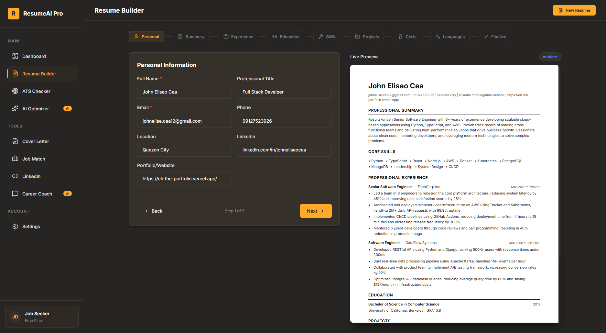
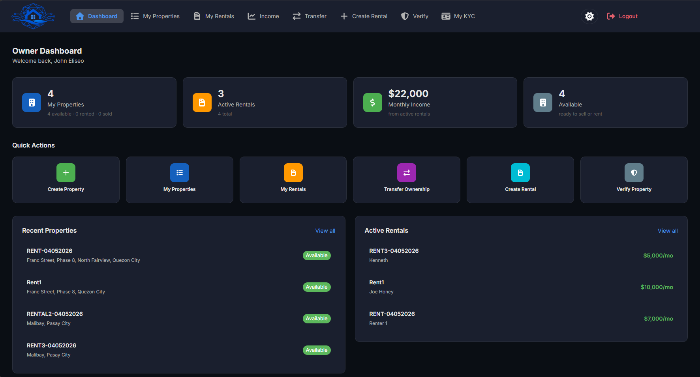
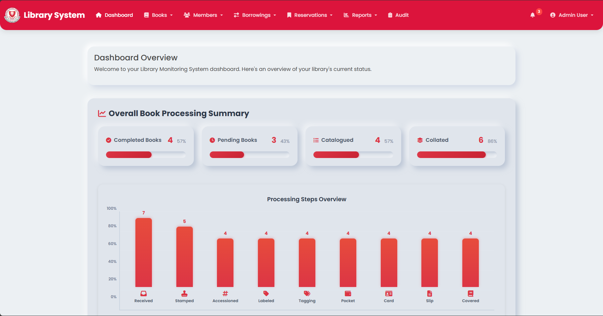
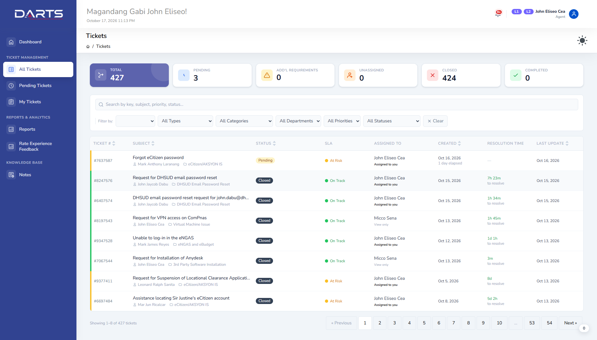
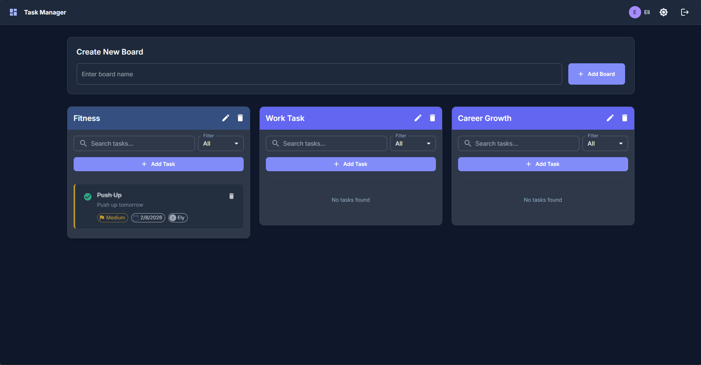
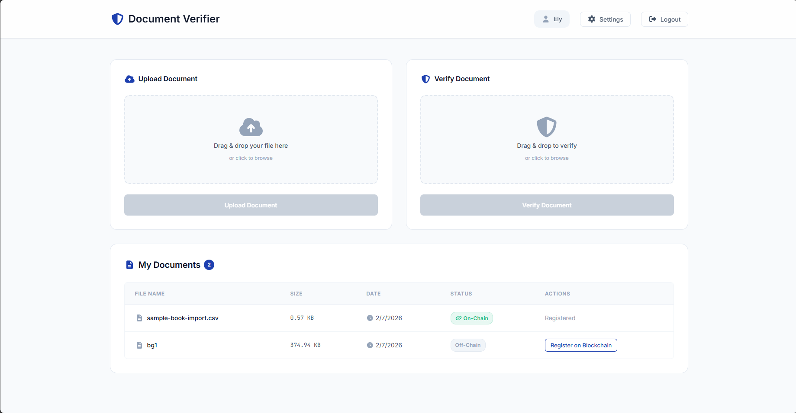

Projects & explorations
Built to be used.
A selection of web applications, public service platforms, and experiments in what comes next.

A clearer path from experience to opportunity.

Connecting citizen concerns with public service.

Property management meets verifiable ownership.

Every book, member, and loan in one place.

Structured workflows for a national housing program.

Making IT support easier to manage.

A shared view of what comes next.

Document authenticity, backed by a ledger.